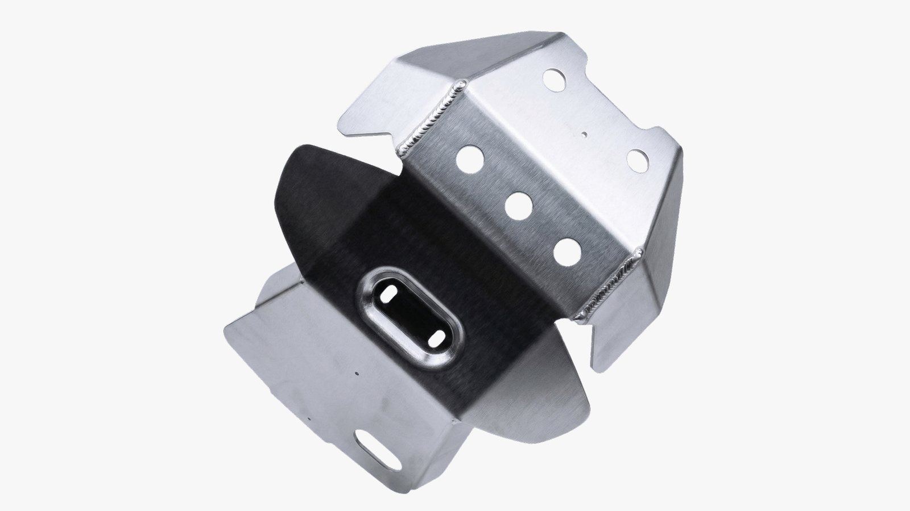
Proyecto 02 · Kawasaki · Integración OEMProject 02 · Kawasaki · OEM integration
Cubrecárter KLX 300KLX 300 skid plate
Cubrecárter diseñado para la Kawasaki KLX 300 e integrado a la línea de ensamblaje de la moto. Protege el motor manteniendo un peso bajo y una buena rigidez estructural gracias a su construcción en aluminio plegado y estampado, con un calce preciso y una integración limpia con el chasis.
Skid plate designed for the Kawasaki KLX 300 and integrated into the motorcycle's assembly line. It protects the engine while keeping weight low and rigidity high through bent and stamped aluminum construction, with precise fitment and clean integration with the chassis.
Relevamiento en plantaOn-site research
El proyecto empezó en la planta, trabajando directamente con la moto en las primeras etapas de producción. Con modelos de estudio rápidos se relevaron los puntos de montaje, el espacio disponible y las zonas a proteger alrededor del motor y la parte baja del chasis.
The project began on site, working directly with the motorcycle during the early stages of production. Quick study models were used to understand mounting points, available space and the areas to protect around the engine and lower frame.
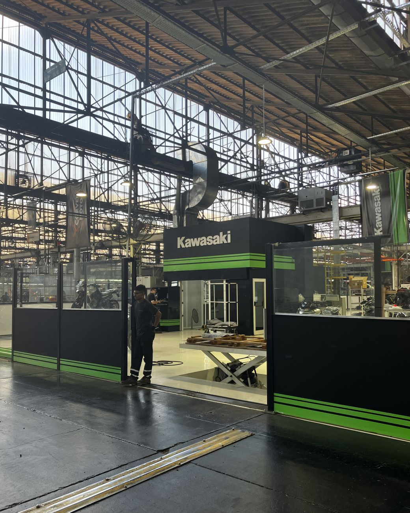
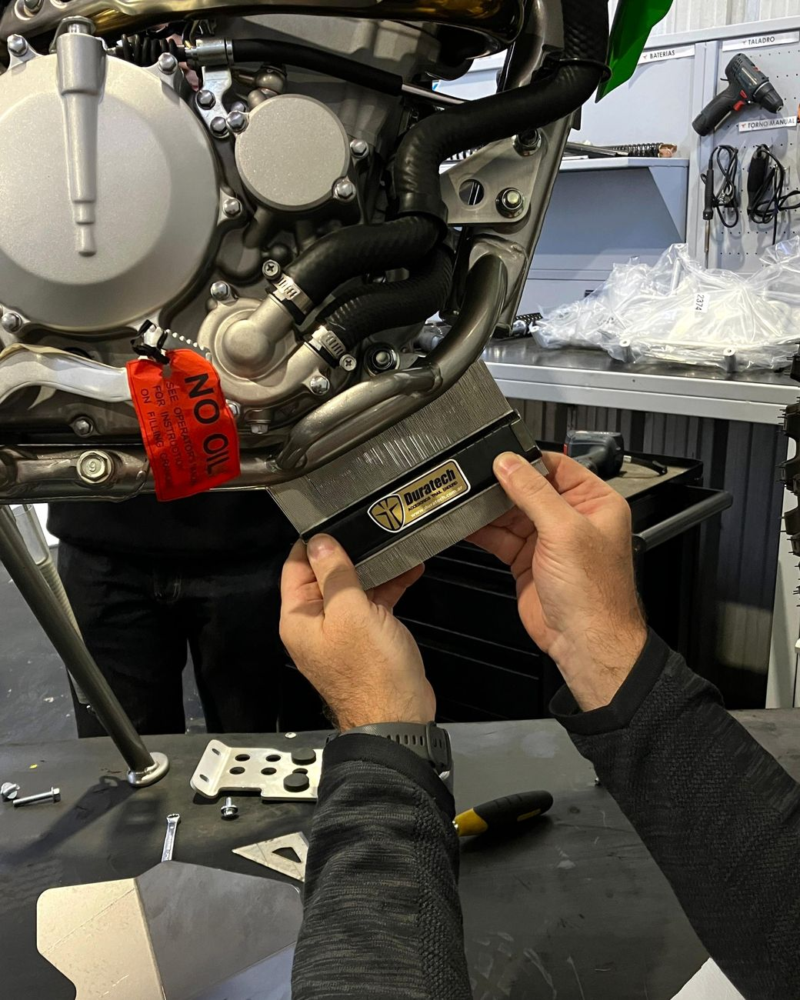
Iteraciones de diseñoDesign iterations
El diseño evolucionó en varias iteraciones, ajustando la geometría, las interfaces de montaje y la cobertura de protección alrededor del motor. La pieza nace de un desarrollo plano que se pliega hasta tomar su forma final.
The design evolved through several iterations, refining geometry, mounting interfaces and protection coverage around the engine. The part starts as a flat pattern that is bent into its final shape.
Pruebas de estampadoStamping tests
Antes de producir se hicieron pruebas de estampado para validar la factibilidad del conformado y ver cómo se comportaba el material durante la fabricación.
Early stamping tests validated the feasibility of the forming process and showed how the material behaved during manufacturing.
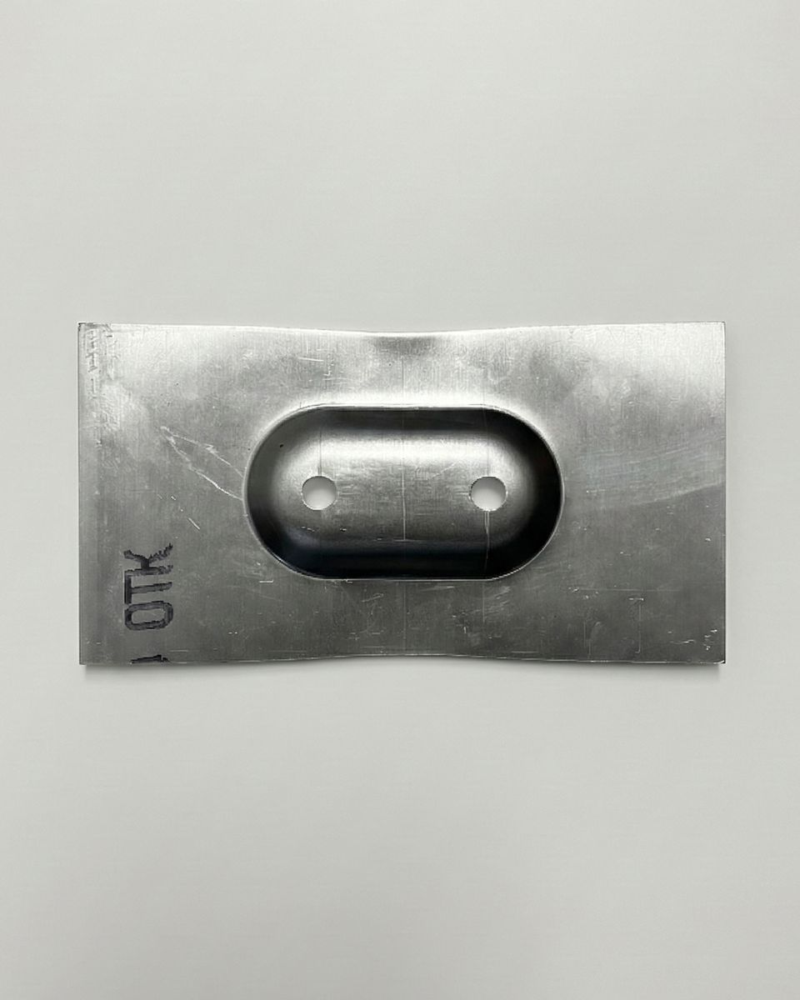
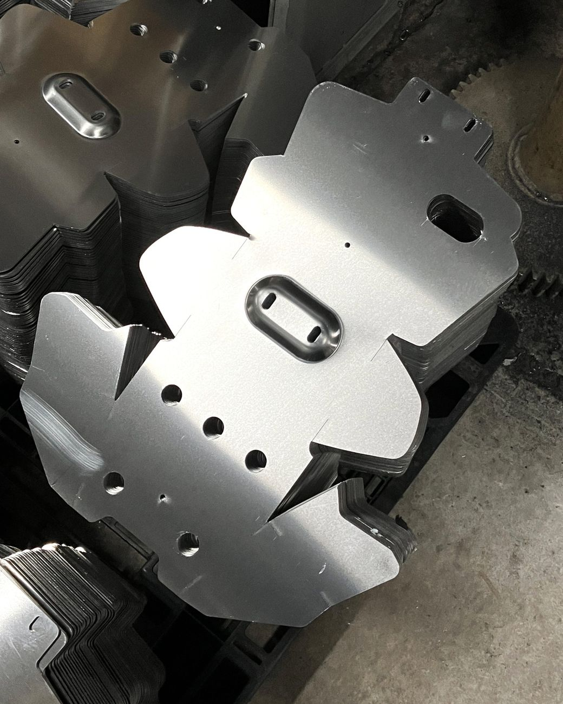
En serieIn series production
Una vez validado, el cubrecárter pasó a producción. Se fabricaron miles de unidades dentro del programa de accesorios de la moto, con calidad pareja y compatibles con la línea de ensamblaje.
Once validated, the skid plate moved into production. Thousands of units were manufactured within the motorcycle's accessory program, with consistent quality and full compatibility with the assembly line.
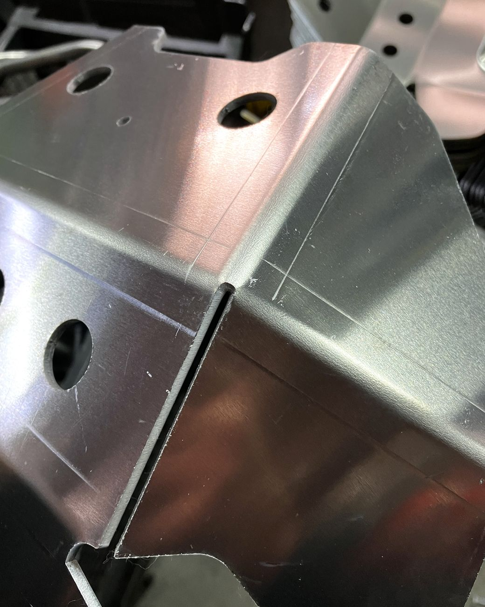
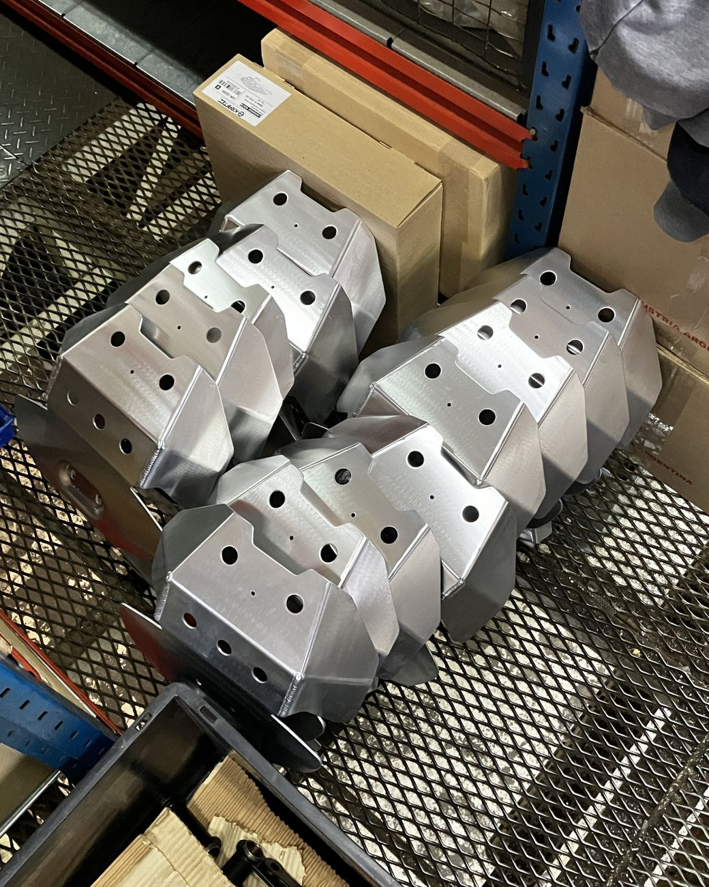
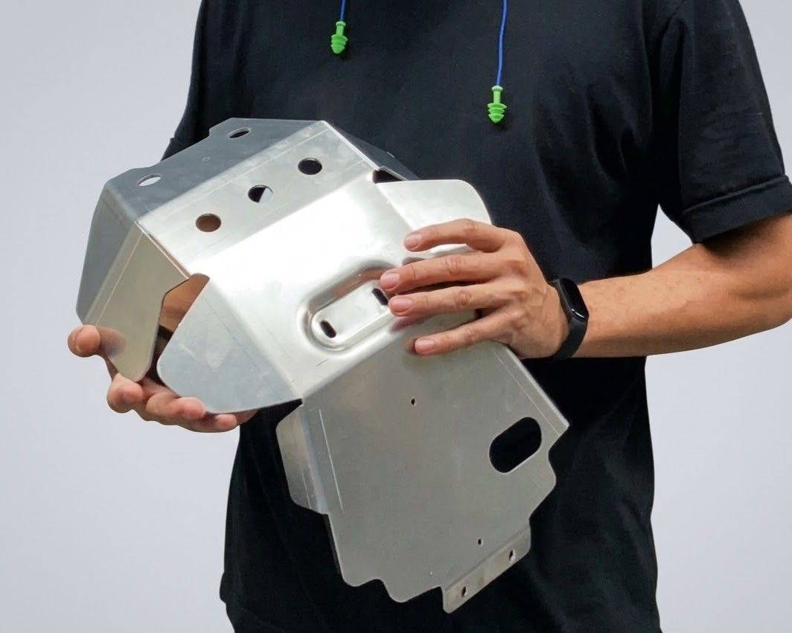
En la calleOn the road
El producto final se integra a la moto y protege los componentes críticos del motor. Hoy se lo ve en uso real, montado en motos que se manejan todos los días.
The final product integrates with the motorcycle and protects critical engine components. Today it can be seen in real-world use, fitted to bikes ridden every day.
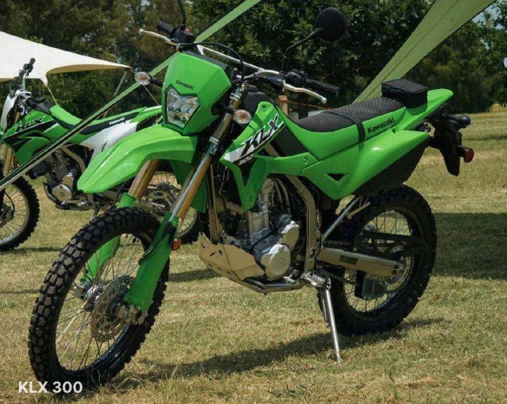
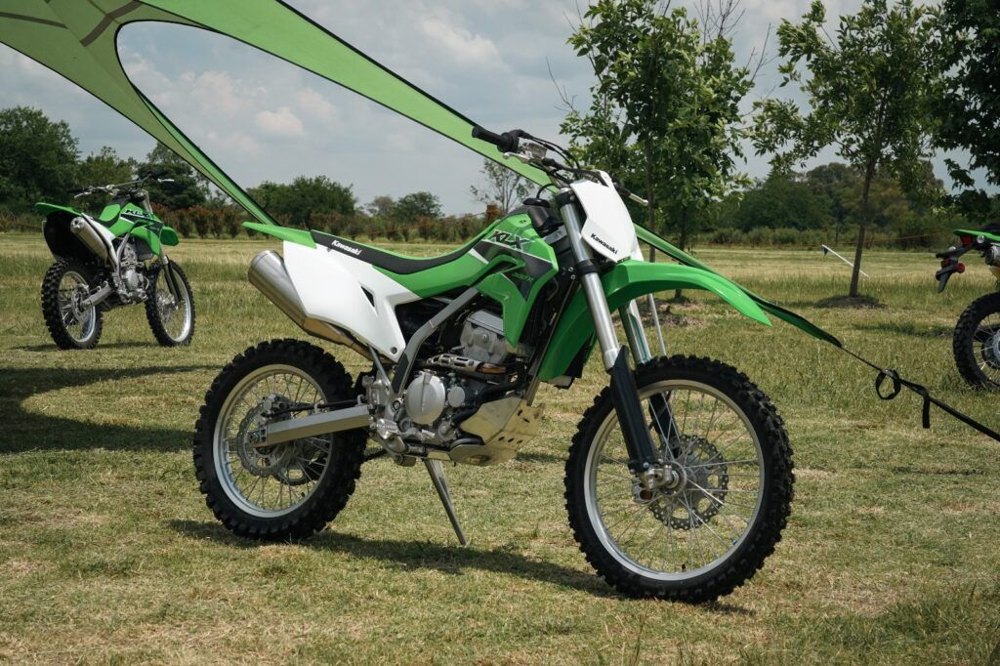
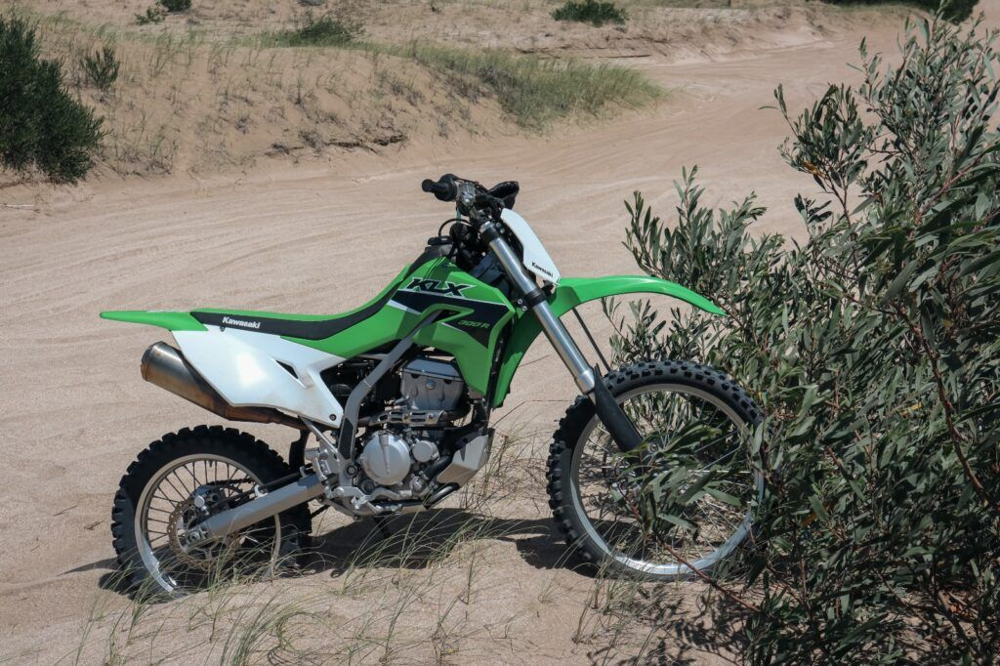
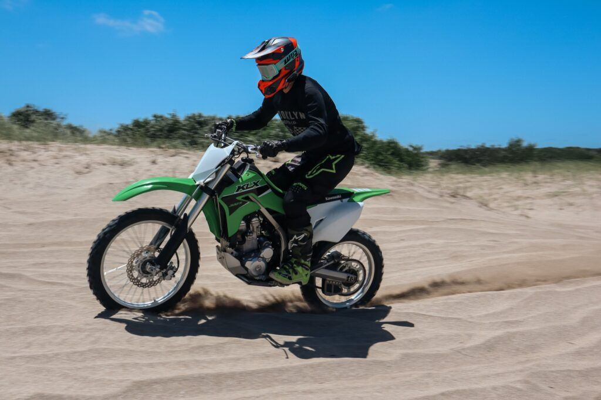